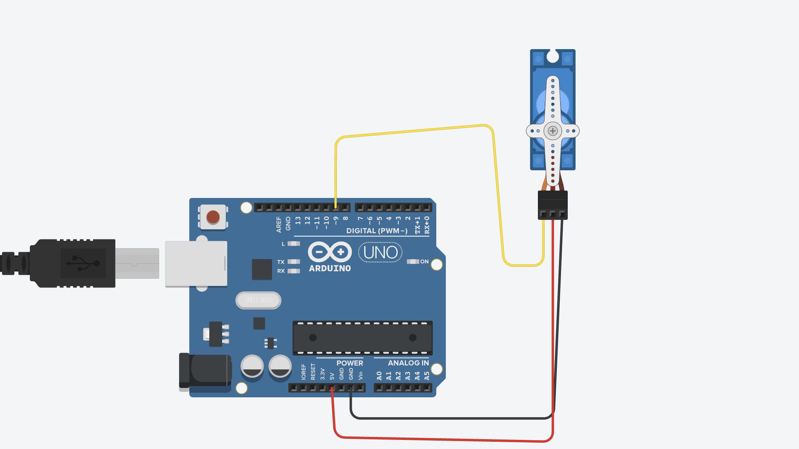

Guía de trabajo
Título de la práctica: Huevo dinosaurio
Modalidad: Individual o por equipos
Duración estimada: 4 a 6 sesiones
Ajusta los ángulos del servo antes de montar el mecanismo final para evitar forzar la tapa o la estructura del huevo.
Producto final identificado
Construir y programar un huevo de dinosaurio animado con servomotor, simulando movimientos internos, apertura y cierre dentro de una experiencia tipo escape room.
Objetivo 1: Investigar cómo contar una acción con movimiento
Descripción: Observar una escena breve de eclosión o imaginar cómo algo empujaría desde el interior de un huevo. Identificar movimientos pequeños, pausa, movimiento fuerte y cierre.
Entrega: Secuencia de cuatro viñetas que represente el inicio, los empujes, la apertura y el cierre.
Evaluación: La secuencia tiene un orden claro y diferencia los empujes pequeños de la apertura principal.
Objetivo 2: Planear la secuencia de animación
Descripción: Convertir las viñetas en una tabla de movimientos con posición inicial, ángulo aproximado y tiempo de espera para cada paso.
Entrega: Tabla de la secuencia completa desde el huevo cerrado hasta su regreso a la posición inicial.
Evaluación: La planeación incluye al menos tres empujes, una apertura más amplia, una pausa y un cierre.
Objetivo 3: Diseñar el mecanismo de apertura
Descripción: Dibujar cómo el servo empujará o levantará la tapa. Identificar el punto de apoyo, el recorrido y una forma de fijar el servo sin impedir el movimiento.
Entrega: Boceto lateral del huevo y diagrama de conexión con el pin del servo etiquetado.
Evaluación: El diseño muestra una unión posible, una tapa móvil y espacio suficiente para el recorrido del servo.
Objetivo 4: Probar ángulos sin la tapa final
Descripción: Conectar el servo y probar de manera gradual varios ángulos con una pieza ligera de ensayo. Identificar posiciones seguras para cerrado, empujes y apertura.
Entrega: Tabla de ángulos probados con resultado seguro, insuficiente o excesivo.
Evaluación: Los ángulos seleccionados producen movimientos distintos y no bloquean ni fuerzan el servo.
Objetivo 5: Construir y programar los empujes
Descripción: Montar el mecanismo y programar únicamente los movimientos pequeños. Ajustar amplitud y pausas para que parezcan intentos de salir desde el interior.
Entrega: Video de los empujes y registro de los ángulos y tiempos elegidos.
Evaluación: Se observan varios empujes diferentes, la tapa regresa después de cada uno y el mecanismo permanece firme.
Objetivo 6: Integrar apertura y cierre
Descripción: Agregar la apertura amplia, la espera y el cierre a la secuencia de empujes. Ejecutar el ciclo completo y comprobar el orden.
Entrega: Video de un ciclo completo y lista ordenada de las acciones observadas.
Evaluación: El huevo inicia cerrado, realiza empujes, abre con mayor amplitud, espera y vuelve a cerrar.
Objetivo 7: Mejorar realismo y resistencia
Descripción: Ajustar tiempos y ángulos para mejorar el ritmo. Reforzar la fijación del servo y probar varios ciclos para encontrar roces, vibraciones o calentamiento.
Entrega: Registro de cinco ciclos con problemas encontrados, correcciones y valores finales.
Evaluación: La secuencia se percibe progresiva, la tapa se mueve sin atorarse y el mecanismo completa cinco ciclos sin soltarse.
Materiales
- 1 Arduino Uno
- 1 servomotor SG90, MG90S o similar
- Huevo o estructura mecánica con tapa móvil
- Fuente de 5V para el servo si el montaje lo requiere
- Protoboard
- Cables Dupont
- Materiales para fijar el servo al mecanismo
Descripción general
El servo inicia en posición cerrada. Después realiza movimientos cortos para representar empujes desde el interior del huevo. Al final, ejecuta una apertura más amplia, espera un momento y vuelve a cerrar.
Explicación del funcionamiento
El programa usa la librería Servo para controlar el ángulo del mecanismo. Los movimientos pequeños alternan entre valores bajos y la posición inicial. La apertura principal usa un ángulo mayor para levantar o empujar la tapa del huevo.
Espacio para diagrama
El diagrama de esta práctica se muestra con el archivo del proyecto.

Código completo
#include <Servo.h>
Servo servoHuevo;
int pinServo = 9;
void setup() {
servoHuevo.attach(pinServo);
servoHuevo.write(0);
delay(1000);
}
void loop() {
// Pequenos movimientos como si algo empujara desde dentro
servoHuevo.write(10);
delay(200);
servoHuevo.write(0);
delay(200);
servoHuevo.write(15);
delay(250);
servoHuevo.write(0);
delay(300);
servoHuevo.write(25);
delay(300);
servoHuevo.write(5);
delay(300);
// Apertura mas fuerte
servoHuevo.write(60);
delay(1000);
// Cierre
servoHuevo.write(0);
delay(2000);
}Producto final
Descripción: Huevo de dinosaurio animado con un servomotor que realiza pequeños empujes internos, una apertura más amplia y un cierre.
Entrega:
- Enlace de Drive con video del huevo armado y la secuencia de empuje, apertura y cierre.
- Enlace de Tinkercad del circuito y código, si se realizó en simulador.
- Documento o texto en Drive con los ángulos finales usados en el mecanismo.
- Los enlaces deben permitir acceso a cualquier persona que los tenga.
Evaluación: El huevo completa la secuencia solicitada en el orden correcto, usa ángulos seguros, mantiene firme el mecanismo y diferencia con claridad los empujes de la apertura principal.
Preguntas de reflexión
Preguntas de desarrollo
Enviar proyecto
Antes de enviar, verifica que los siete objetivos estén completos y que al menos un enlace de Tinkercad o Drive funcione sin solicitar permiso.
Inicia sesión con Google para habilitar el envío.